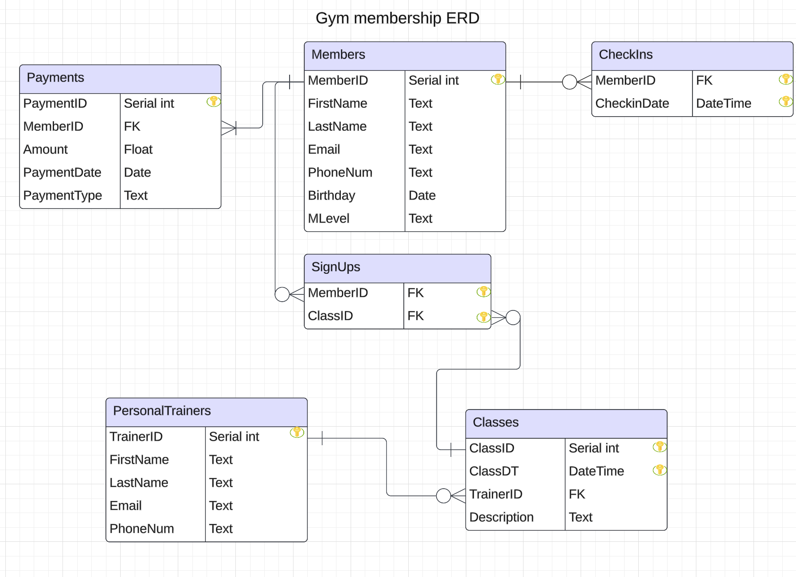
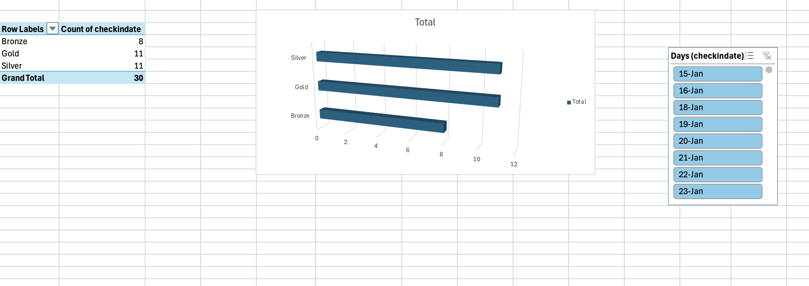

This project was to learn the basics of SQL databases, and how they work. We were tasked to design a database for a business, in my case a gym, and to develop and create the entire database.
This is a link to my github with an overview of the project.
Final Project Report
Steps Taken to Complete This Project
- ER Diagram Creation
- Database Implementation
- Pandas Extraction
- Excel Analysis
ER Diagram Creation
- Before beginning this project there were a few requirements to keep in mind, we had to have at least 5 entities, and they had to comply with third normal form.
- I decided to create tables representing a gym's membership system, as it would be a real world example of a database.
- I used Lucid Chart, a well known diagram creation website, to model the ER diagram.
- I created six tables: gym members, personal trainers, classes, sign ups, checkins, and payments.
- I linked all the tables and checked to ensure compliance with third normal form.
- This is a link to the diagram
- 
Database Implementation
- To implement the database I connected to our class database on Postgres.
- I created a schema "Gym" to place all my tables under.
- Using my ER diagram, I replicated all the tables with create statements in a single file.
- Once I had the create statements I used Mockaroo, a mock data creation website, to fill my tables.
- This is a link to my SQL script
- I then ran the SQL script in my terminal, and created all the tables with data inside them.
Pandas Extraction
- To extract my database and its information, I used Pandas and SQLAlchemy.
- I used terminal to connect and access the database through the code.
- I got my password from an environment variable I set up and then used SQLAlchemy to create a connection string.
- Then I created an engine with SQLAlchemy to begin running a query.
- I joined two of my tables, Members and CheckIns, to create a single table with all member check-in data.
- I then used Pandas to create an Excel file based on this data.
- This is a link to the Python code
Excel Analysis
- To analyse the data gathered in Excel, I first linked a separate Excel sheet to the output to avoid losing progress, as every time the Python script is run, the output sheet is deleted and recreated.
- Then I used a pivot table to count the amount of times members of each different level of membership checked in.
- I then created a graph for this same purpose with a slicer based on the day to see which level of membership had the most people check in on a certain day.
- This is a link to download the Excel Spreadsheet
- 
{kind=link}